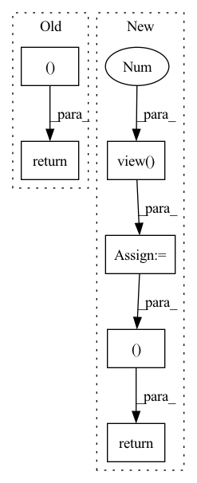

Pattern ID :1774

Before Change
align = F.softmax(attn_score, dim=-1)
context = torch.bmm(align.unsqueeze(dim=1), value).squeeze(dim=1)
return context, align
class ScaledDotProductAttention(nn.Module):
After Change
// Get output
combined = torch.cat([context, residual], dim=2)
output = self.out_projection(combined.view(-1, self.hidden_dim << 1)).view(batch_size, -1, self.hidden_dim)
return output, attn
class ScaledDotProductAttention(nn.Module):
In pattern: SUPERPATTERN
Frequency: 4
Non-data size: 6
Instances
Fragment ID: 12989958
Project Name: sooftware/attentions
Commit Name: 49890ecd635842fd2e24da374f6de271471ac65c
Time: 2020-05-26
Author: sh951011@gmail.com
File Name: attention.py
M Class Name: LocationAwareAttention
N Class Name: LocationAwareAttention
M Method Name: forward(4)
N Method Name: forward(4)
M Parent Class: nn.Module
N Parent Class: nn.Module
M File Name: attention.py
N File Name: attention.py
M Start Line: 127
M End Line: 128
N Start Line: 110
N End Line: 136
'>
Before Change
zD = self.decode(z_)
out = torch.sigmoid(zD)
return out, kld
def bound(rce, x, kld, beta):
After Change
// KLD including logdet term
p_z_ = torch.sum(p.log_prob(z_), -1)
q0_z_0 = torch.sum(q0.log_prob(z_0), -1)
log_det = log_det.view(-1)
kld = - torch.sum(p.log_prob(z_), -1) + torch.sum(q0.log_prob(z_0), -1) - log_det.view(-1)
self.test_params = [torch.mean(- torch.sum(p.log_prob(z_), -1)), torch.mean(torch.sum(q0.log_prob(z_0), -1)), torch.mean(- log_det.view(-1)), torch.mean(kld)]
// Decode
z_ = z_.view(z_.size(0), args.latent_size)
zD = self.decode(z_)
out = torch.sigmoid(zD)
return out, p_z_, q0_z_0, log_det
def bound(rce, x, p_z_, q0_z_0, log_det, beta):
'>
Fragment ID: 12989959
Project Name: vincentstimper/normalizing-flows
Commit Name: bd001374eacad94bdea4150d2bfd1876d35d7523
Time: 2020-03-08
Author: 43236963+lukasryll@users.noreply.github.com
File Name: normflow/inf_network.py
M Class Name: FlowVAE
N Class Name: FlowVAE
M Method Name: forward(2)
N Method Name: forward(2)
M Parent Class: nn.Module
N Parent Class: nn.Module
M File Name: normflow/inf_network.py
N File Name: normflow/inf_network.py
M Start Line: 84
M End Line: 92
N Start Line: 73
N End Line: 95
'>
Before Change
probs = torch.exp(logits - torch.logsumexp(logits, dim=1, keepdim=True))
out = torch.sum(o * probs, dim=1)
return out, buckets
// simple full attention
class FullQKAttention(nn.Module):
After Change
if self._return_attn:
attn_unsort = ((bq_t * seqlen)[:, :, :, None] + bkv_t[:, :, None, :])
attn_unsort = attn_unsort.view(-1, 2 * self.bucket_size * self.bucket_size)
unsorted_dots = scatter_sum(dots.view_as(attn_unsort), attn_unsort)
unsorted_dots = unsorted_dots.reshape(batch_size, self.n_hashes, n_buckets, seqlen, seqlen).sum(dim=2)
attn = torch.sum(unsorted_dots[:, :, 0:query_len, :] * probs, dim=1)
// return output, attention matrix, and bucket distribution
return out, attn, buckets
// simple full attention
class FullQKAttention(nn.Module):
'>
Fragment ID: 12989952
Project Name: lucidrains/reformer-pytorch
Commit Name: 873a26a64b4dfac3677aa32083ed3979475d2d02
Time: 2020-02-09
Author: lucidrains@gmail.com
File Name: reformer_pytorch/reformer_pytorch.py
M Class Name: LSHAttention
N Class Name: LSHAttention
M Method Name: forward(5)
N Method Name: forward(5)
M Parent Class: nn.Module
N Parent Class: nn.Module
M File Name: reformer_pytorch/reformer_pytorch.py
N File Name: reformer_pytorch/reformer_pytorch.py
M Start Line: 201
M End Line: 345
N Start Line: 204
N End Line: 365
'>
Before Change
linear_outputs = self.postnet(mel_outputs)
linear_outputs = self.last_linear(linear_outputs)
return mel_outputs, linear_outputs, alignments
After Change
// Reshape
// (B, T, mel_dim)
mel_outputs = mel_outputs.view(B, -1, self.mel_dim)
stop_outputs = stop_outputs.view(B, -1)
linear_outputs = self.postnet(mel_outputs)
linear_outputs = self.last_linear(linear_outputs)
return mel_outputs, linear_outputs, alignments, stop_outputs
'>
Fragment ID: 12989950
Project Name: coqui-ai/tts
Commit Name: 5750090fcd4a6718608c7357e3890f5b2a545ae0
Time: 2018-03-22
Author: egolge@mozilla.com
File Name: models/tacotron.py
M Class Name: Tacotron
N Class Name: Tacotron
M Method Name: forward(3)
N Method Name: forward(3)
M Parent Class: nn.Module
N Parent Class: nn.Module
M File Name: models/tacotron.py
N File Name: models/tacotron.py
M Start Line: 43
M End Line: 48
N Start Line: 31
N End Line: 51